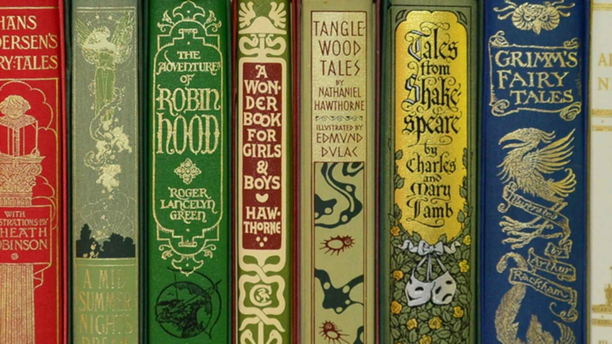

Fairy Tales

Fairy tales are a genre of folklore that typically involve magical and fantastical elements. These stories often feature enchanting settings, mythical creatures, and characters facing moral dilemmas or challenges. Here are some key characteristics of fairy tales:
- Magical Elements: Fairy tales often include magic or supernatural elements such as witches, fairies, wizards, talking animals, or enchanted objects.
- Simplified Characters: Characters in fairy tales are usually archetypal and simplified, representing virtues (heroes) or vices (villains) in a clear-cut manner.
- Moral Lessons: Many fairy tales convey moral lessons or themes, teaching values like kindness, bravery, honesty, or the consequences of greed and selfishness.
- Fantastical Settings: Settings in fairy tales can range from enchanted forests and castles to mystical realms or even everyday places transformed by magic.
- Happy Endings: Traditionally, fairy tales conclude with a happy ending where good triumphs over evil, and characters achieve their goals or find happiness.
- Oral Tradition: Historically, fairy tales were passed down orally through generations before being written down. This contributed to variations in the tales across different cultures.
- Cultural Variations: Fairy tales exist in numerous cultures worldwide, with each culture adding its own unique twists, characters, and settings to the stories.
Some famous examples of fairy tales include "Cinderella," "Snow White," "Little Red Riding Hood," "Beauty and the Beast," and "The Little Mermaid." These stories continue to captivate audiences of all ages, illustrating timeless themes and the enduring appeal of magic and imagination in storytelling.
-
-
-